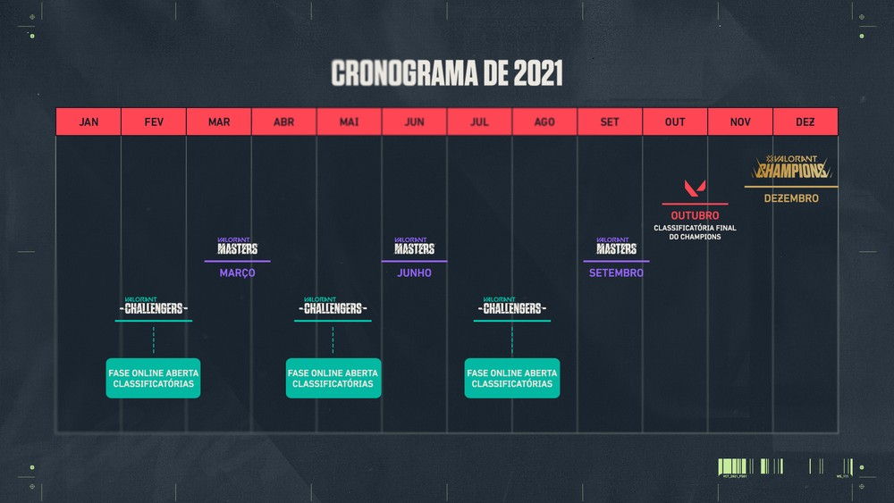

Cenário Competitivo
Com natureza competitiva, Valorant teve um primeiro ano de descoberta, com a distribuição de diferentes torneios e a realização do First Strike, em dezembro de 2021, e uma segunda temporada de consolidação, com a criação da VCT: a Valorant Champions Tour.
Dividida em três etapas, a VCT inicia com o Valorant Challengers, que pode ser acessado por qualquer equipe dos diferentes cenários através de uma fase online de classificatórias abertas. Das três diferentes Challengers, equipes se classificam para o Valorant Masters, torneios que podem ser regionais ou internacionais. Nesses, as equipes conquistam pontos que contam para o Circuito da VCT, que classifica as equipes para o Valorant Champions, em dezembro, o mundial da categoria.
Times Brasileiros
Durante o primeiro ano do cenário competitivo de Valorant, a Gamelanders foi a grande equipe a se destacar, chegando em sete finais e conquistando sete títulos, incluindo o do First Strike. Além dela, organizações mais tradicionais começaram a investir no cenário, como a Vorax e a FURIA, e montaram elencos para as disputas dos campeonatos no Brasil.
As oito equipes classificadas para o Valorant Masters Brazil, em março de 2021:
- Gamelanders: Nyang, fznnn, JhoW, Jonn e mwzera
- SLICK: BLD, DiMAS, Hastad, mNdS e ntk
- FURIA: xand, qck, Teddy1, Khalil e nzr
- Imperial: Biscoit1n, Evilkyk, rsT, gustt1nha e tuyz
- Vorax: dragonite, fzkk, v1xen, delevingne e krain
- paiN Gaming: murizz, kon4n, matheuzin, ryotzz e pepA
- Team Vikings: gtn, Sacy, frz, sutecas e Saadhak
- Sharks: prozin, DeNaro, fra, light e gaabxx